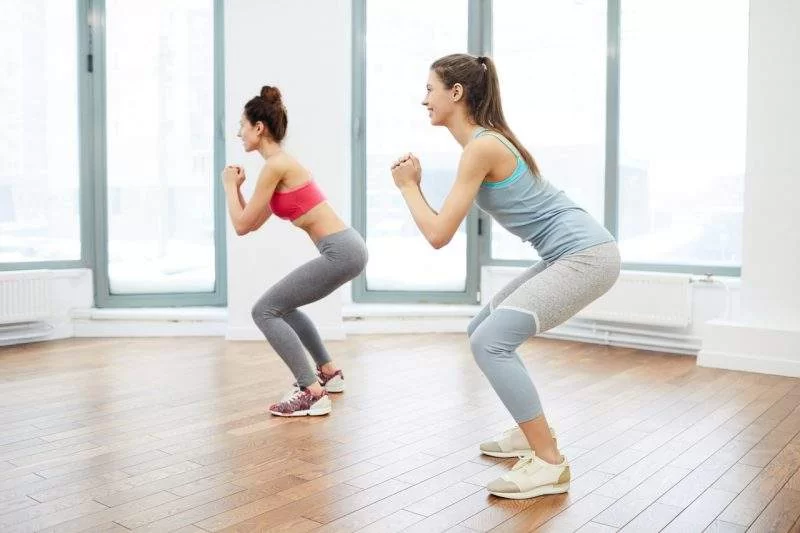
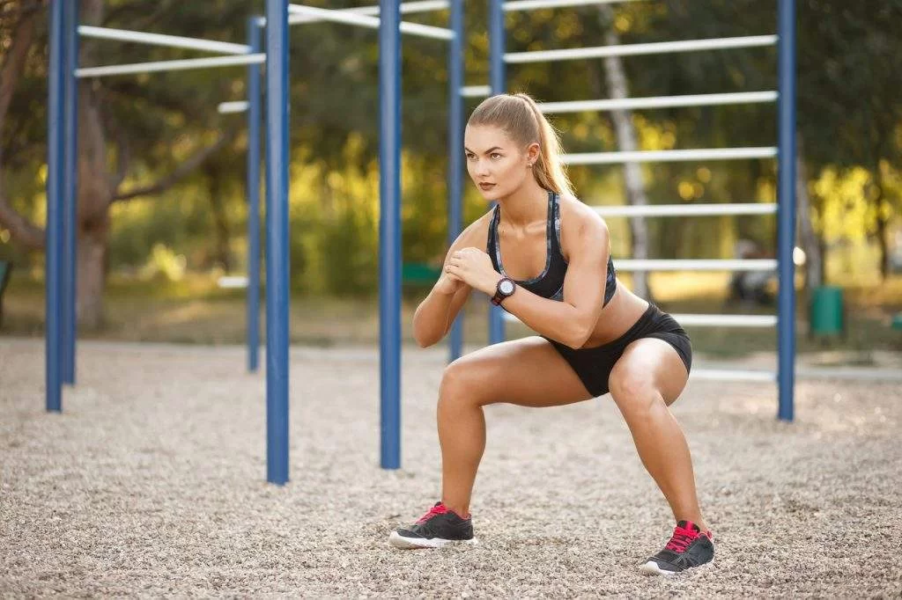
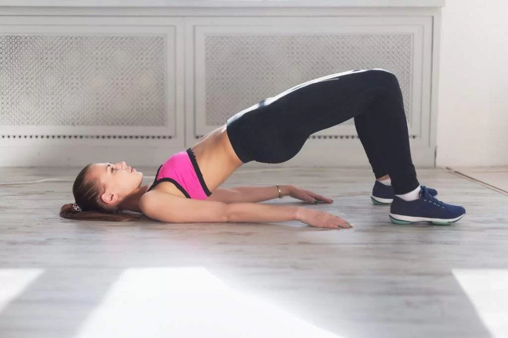
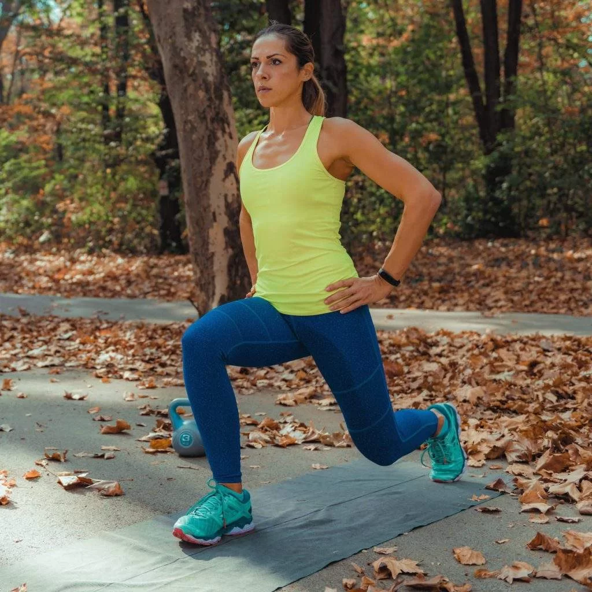
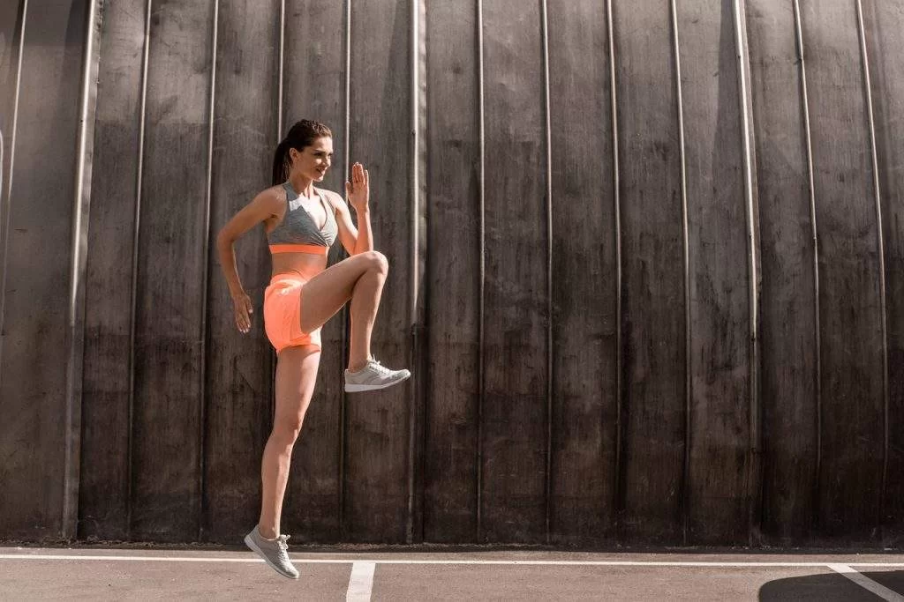
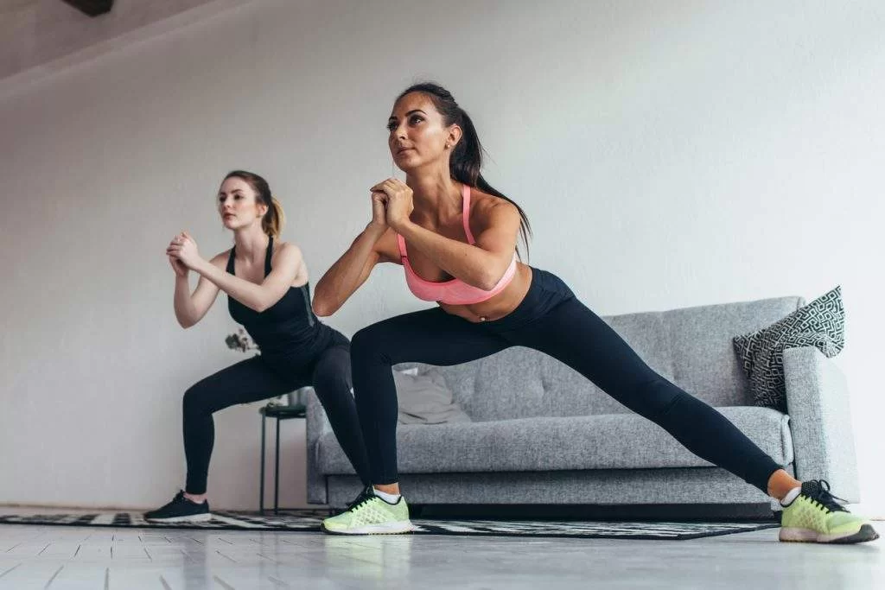

Exercícios
Que podem ser feitos em casa!
Ingredientes
Se você deseja conquistar glúteos durinhos, saiba que é possível treinar na sua casa, com exercícios que não exigem acessórios ou aparelhos.
Os músculos da região (glúteo máximo, glúteo médio e glúteo mínimo) são muito importantes para a postura e alinhamento. Isso porque eles trabalham juntos para estabilizar a pélvis e manter os quadris e joelhos alinhados.
Mas, quando você fica sentado o dia todo, os glúteos desalinham, e como eles são responsáveis por apoiar outras partes do seu corpo, não é bom para o seu. Portanto, se você trabalha sentado, provavelmente é ainda mais essencial dar um bom treino aos músculos posteriores, para evitar dores nas costas, por exemplo.
Embora exercícios para o com pesos – como levantamentos de halteres e agachamento com barra – sejam considerados movimentos de força eficazes para a parte inferior do corpo, movimentos que não exigem acessórios são excelentes da mesma forma para fortalecer os glúteos e pernas.
Confira abaixo alguns exercícios para o ficar fortalecido. Tente fazer cada movimento por 30 segundos, ou por 60 segundos, se isso for de um nível avançado. Você também pode contar repetições, visando pelo menos 10 a 12 vezes de cada uma.
Agachamento com peso corporal

Comece em pé com os pés um pouco mais afastados do que a largura dos quadris.
Agache levando o para trás e dobrando os joelhos até que as coxas fiquem paralelas ao chão. Concentre-se no movimento proveniente dos quadris, glúteos e isquiotibiais – não dos joelhos e quadriláteros. Mantenha seu tronco envolvido para que suas costas fiquem retas.
Em seguida, fique em pé retornando à sua posição inicial.
Agachamento com salto

Fique em pé com os pés afastados na largura dos quadris.
Logo após agache-se levando bunda para trás, dobrando os joelhos e abaixando até que as coxas fiquem paralelas ao chão.
Na parte inferior do agachamento, pule o mais alto que puder e endireite as duas pernas.
Abaixe agachando-se mais uma vez e salte novamente.
Ponte glúteo

Deite-se de costas com as mãos ao lado do corpo, os joelhos dobrados e os pés apoiados no chão, na largura dos quadris.
Logo após, aperte os glúteos e os abdominais e empurre os calcanhares para levantar os quadris a alguns centímetros do chão, até o corpo formar uma linha reta, dos ombros aos joelhos.
Faça uma pausa e aperte os glúteos na parte superior e depois abaixe lentamente os quadris para voltar à posição inicial.
Estocada reversa

Fique em pé com os pés afastados na largura dos ombros e quadris.
Dê um passo para trás com o pé esquerdo, firmando a bola do pé esquerdo e mantendo o calcanhar fora do chão.
Dobre os joelhos a 90 graus. Concentre-se em manter seu tronco firme e os quadris dobrados. Às vezes, pode ser útil colocar as mãos nos quadris para garantir que os quadris não estejam inclinados para o lado ou para frente e para trás.
Empurre a bola do seu pé esquerdo para retornar à sua posição inicial.
Agora dê um passo para trás com o pé direito e afunde-se em uma estocada do outro lado.
Continue investindo, alternando os lados a cada vez.
Estocada reversa

Fique em pé com os pés afastados na largura dos ombros.
Com o tronco reto, pule o pé esquerdo para a frente e o pé direito para trás e dobre os joelhos para que você caia em uma estocada.
Lodo depois ponha os dois pés de volta à posição inicial.
Agora, pule o pé direito para a frente, o pé esquerdo para trás e solte uma estocada do outro lado.
Continue pulando e alternando os lados cada vez que agachar.
Curtsy
Fique em pé com os pés afastados na largura dos quadris.
Coloque o pé direito na diagonal atrás da perna esquerda e dobre os joelhos para fazer uma curva.
Empurre o calcanhar esquerdo para ficar em pé e vire a perna direita para o lado esquerdo com um pequeno chute, apontando o pé direito e equilibrando-se por apenas um momento enquanto estende completamente a perna.
Abaixe o pé direito e coloque-o atrás da perna esquerda.
Em seguida faça do outro lado.
Agachamento lateral

Fique em pé com os pés juntos e as mãos na altura do peito.
Coloque o pé direito na direita, para que os pés fiquem mais largos do que a largura do quadril, dobre os quadris para jogar a bunda de trás e dobre os joelhos para ficar agachado.
Endireite os joelhos e traga o pé direito de volta à sua posição inicial.
Repita no outro lado.
Impulso de agachamento
Fique em pé com as pernas um pouco mais afastadas que a largura dos quadris.
Coloque as mãos no chão à sua frente e, depois, pule os pés para trás, para que você caia em uma posição alta com os quadris nivelados e os ombros sobre os pulsos.
Agora pule os pés de volta para as mãos e deixe o firme.
Existem várias maneiras de modificar esse movimento, de modo que seja adequado para você. Você pode fazer isso o mais rápido ou lentamente possível. Em vez de pular os pés para trás, você também pode recuar um de cada vez
Jhonatan da luz camargo 09891558975 –
CNPJ: 31.422.225/0001-60 – MATRIZ: ESTRADA GERAL, RIO BONITO 2
CEP: 88420-000 RIO BONITO/AGROLANDIA/SC– E-mail: sac@beleza-natural1.com
Termos de uso |
Políticas de Privacidades